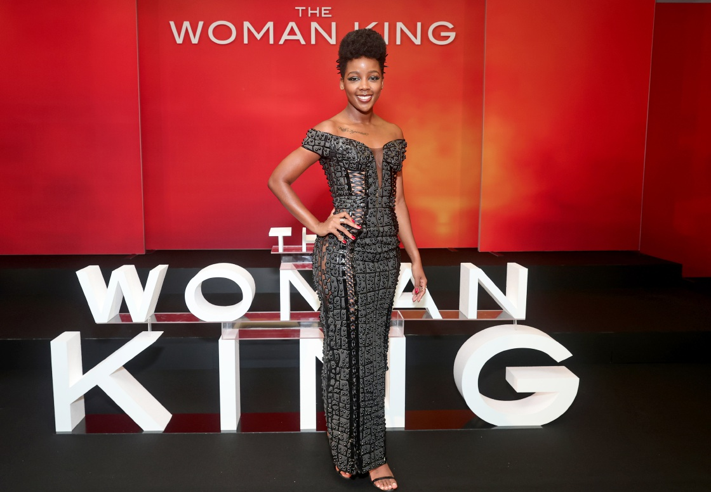
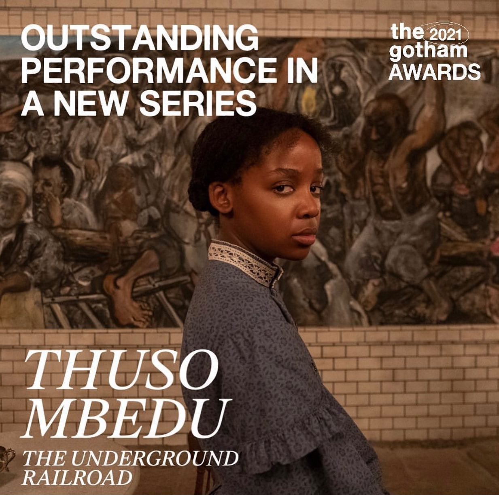
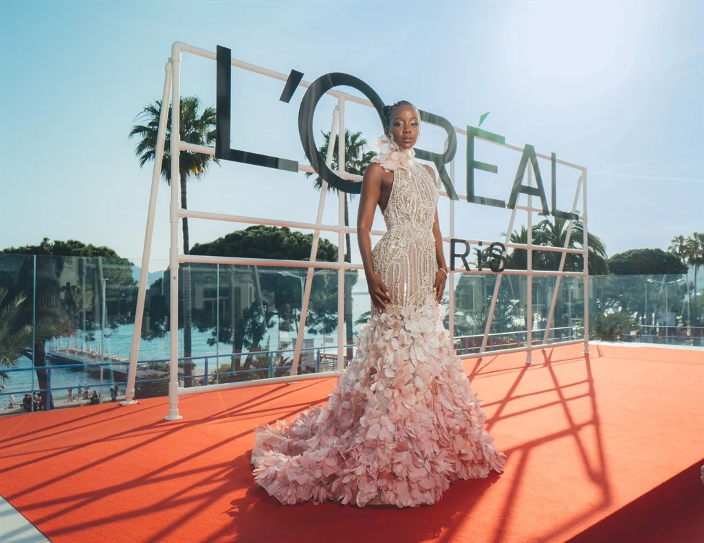

THUSO MBEDU
Breakout Female Actress
Awards and Nominations
The Woman King
In 2023, The Woman King received recognition at various award ceremonies.
Thuso Mbedu, for her exceptional performance in the film, won the Black Reel Award for Best Breakthrough Performance by a Female. Additionally, at the National Film & Television Awards in South Africa, Thuso Mbedu was nominated for Outstanding Actress of the Year and Best Supporting Actress for her role in The Woman King.
The Underground Railroad
In 2021, Thuso Mbedu's portrayal in The Underground Railroad garnered critical acclaim, earning her nominations and awards. She was nominated for Individual Achievement in Drama at the TCA Awards, Outstanding Actress in a TV Movie/Limited Series at the Black Reel Awards, and Best Actress in a Limited Series, Anthology Series, or Television Movie at the Hollywood Critics Association TV Awards. Furthermore, she won the TV Breakout Star category at the Hollywood Critics Association TV Awards and received the Gotham Award for Outstanding Performance in a New Series.
In 2022, Thuso Mbedu continued to receive recognition for her role in The Underground Railroad. She was nominated for Best Actress in a Miniseries or Television Movie at the Critics' Choice Television Awards. Additionally, she won the Independent Spirit Award for Best Female Performance in a New Scripted Series. Thuso Mbedu's outstanding performances in The Underground Railroad showcased her talent and resulted in numerous accolades and acknowledgements from the industry.
Is'Nthunzi

In 2017, Thuso Mbedu's role in Is'Thunzi earned her the Best Actress award at the DSTV Viewers Choice Awards. Her exceptional performance also garnered her a nomination for Best Performance by an Actress at the International Emmy Awards.
In 2018, Thuso Mbedu received the Best Actress in a TV Drama award at the South African Film and Television Awards for her role in Is'Thunzi. Once again, her talent was recognized internationally with a nomination for Best Performance by an Actress at the International Emmy Awards.
In 2019, Thuso Mbedu's remarkable acting skills in the TV drama Is'Thunzi earned her a nomination for Best Actress - TV Drama at the South African Film and Television Awards.
Through her portrayal in Is'Thunzi, Thuso Mbedu showcased her acting prowess and garnered multiple recognitions and accolades both within South Africa and on the international stage.
L'oreal
In 2023, Thuso Mbedu achieved another milestone in her career by becoming the ambassador and spokesperson of L'Oréal for Sub-Saharan Africa. This prestigious role solidified her status as a prominent figure in the entertainment industry and a symbol of beauty and elegance.
As the face of L'Oréal, Mbedu not only represented the brand but also served as an inspiration for aspiring actors and individuals across the region. Her partnership with L'Oréal further highlighted her influence and impact, as she continued to make waves both on and off the screen.